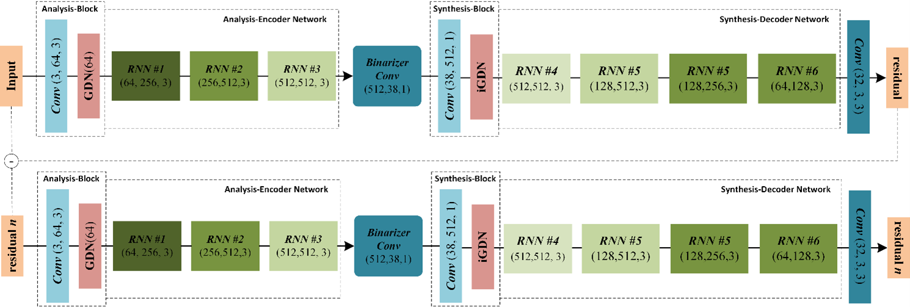
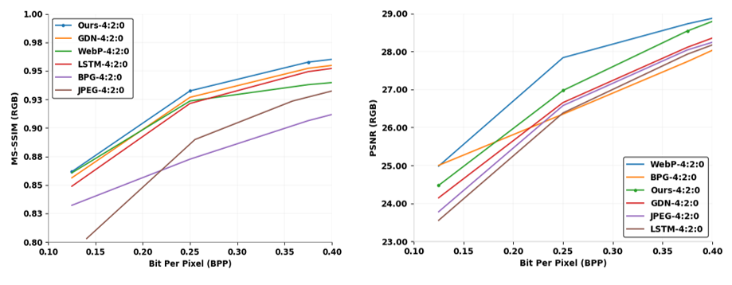

Image Compression with Recurrent Neural Network and Generalized Divisive Normalization
2021 IEEE/CVF Conference on Computer Vision and Pattern Recognition
1Computer Vision and Pattern Recognition Lab1, Sejong University, South Korea
2Department of Artificial Intelligence1,2, Sejong University, South Korea
In this paper, two spatial adaptive blocks called analysis and synthesis are proposed in the variable-rate encoder and decoder side based on a convolution layer and generalized divisive normalization process. Then, it embeds with a variable-rate framework. The analysis block generates a powerful spatial and channel representation with a down-sampling feature for encoding. Simultaneously, synthesis block up-sampling the decoded image. To the best of our knowledge, constructing recurrent neural network-based image compression networks is very limited. This is the first work that employs a generalized divisive normalization scheme in a variable rate network to handle multiple bit rates in the RNN network. Furthermore, visual quality performance and scalability of the proposed blocks and end-to-end network are jointly validated by the popular evaluation with PSNR and MS-SSIM. Comprehensive experiments have been performed on Kodak to describe that the proposed blocks and network jointly achieve significant performance by comparing standard image codecs JPEG, BPG, WebP, and recent method George's.
Abstract
Image compression is the method to remove spatial redundancy between adjacent pixels and reconstruct a high-quality image. In the past few years, deep learning has gained much more attention and produced more promising results in image reconstruction. However, recent methods developed more deep and complex networks which significantly increased network complexity. In this paper, two effective novel blocks are developed namely analysis and synthesis block that employ convolution layer and generalized divisive normalization in the variable-rate encoder and decoder side. Our network utilizes a pixel RNN approach for quantization. Furthermore, to improve the whole network, we encode a residual image with the utilization of LSTM cells to reduce unnecessary information. Experimental results demonstrated that the proposed variable-rate framework with novel blocks outperforms existing methods and standard image codecs, such as George's and JPEG in terms of image similarity.
Iteration Wise Quality Improvment
Iterative Architecture

The iterative architecture of image compression framework based on recurrent neural network and generalized divise normalization. Each input patch was first passed to the analysis-encoder block to enrich image representation. Similarly, the synthesis-decoder block reconstructs a decoded image with the help of recurrent neural network cells.
Performance Evaluation on Kodak dataset
1. Existing CVPR method and Ours

Comparative results of variable-rate network with analysis and synthesis block with recent approaches on kodak benchmark interms of MS-SSIM (left side) and PSNR (right side) vs. BPP.
Bibtex
@InProceedings{Islam_2021_CVPR,
author = {Islam, Khawar and Dang, L. Minh and Lee, Sujin and Moon, Hyeonjoon},
title = {Image Compression With Recurrent Neural Network and Generalized Divisive Normalization},
booktitle = {Proceedings of the IEEE/CVF Conference on Computer Vision and Pattern Recognition (CVPR) Workshops},
month = {June},
year = {2021},
pages = {1875-1879}
}
Acknowledgement
This work was supported by Basic Science Research Program through the National Research Foundation of Korea (NRF) funded by the Ministry of Education (2020R1A6A1A03038540) and by Institute of Information \& communications Technology Planning \& Evaluation (IITP) grant funded by the Korea government (MSIT) (2019-0-00136, Development of AI-Convergence Technologies for Smart City Industry Productivity Innovation).